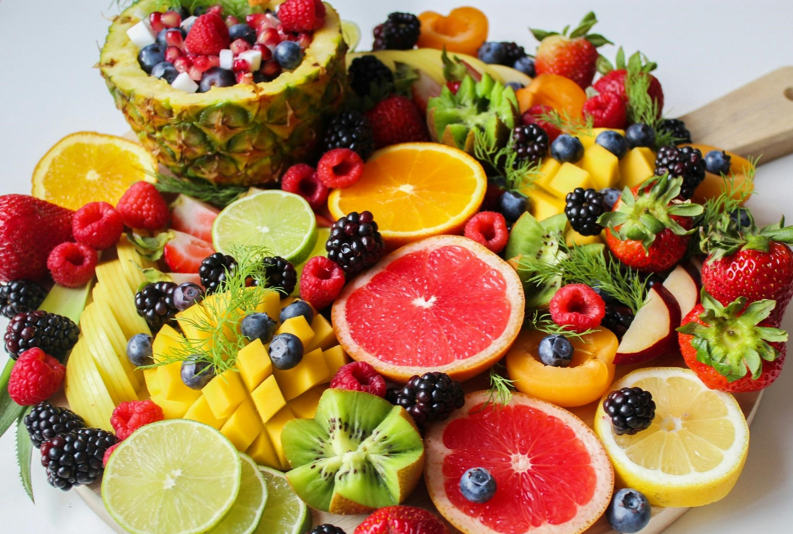
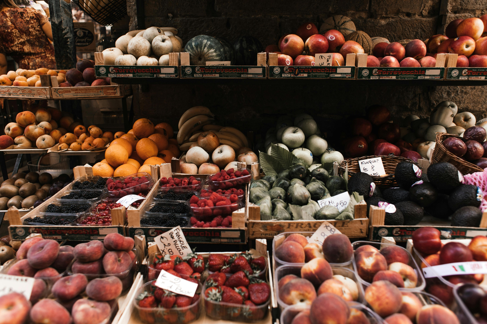
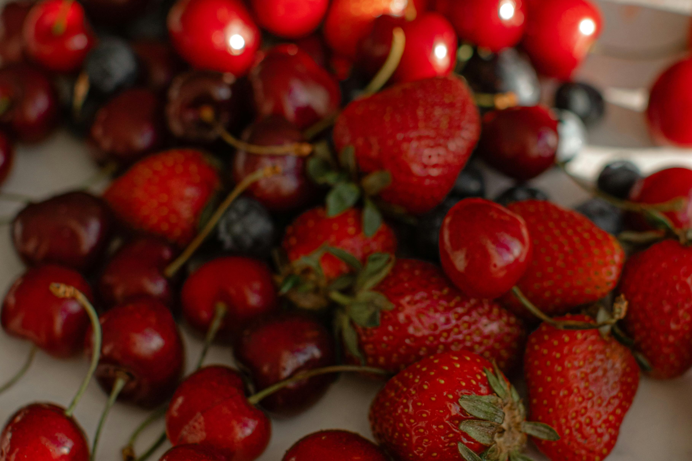
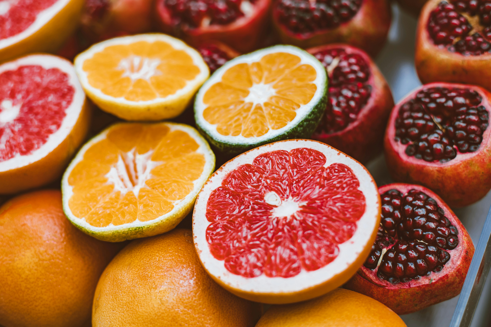
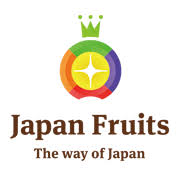

Premium Fruits
Premium fruits are meticulously grown varieties that are known for their exceptional quality, taste, and appearance. These fruits have specific cultivation techniques, and flavors.
" We delivers the finest Japanese fruits directly to your doorstep. From premium melons and grapes to seasonal specialties like Amaou strawberries, we guarantee authentic flavors and unmatched freshness. With temperature-controlled delivery, we bring Japan's natural sweetness to your table, perfect for indulgence, gifting, or enhancing culinary creations "
We source only the finest Japanese fruits ensuring every bite is a taste of perfection.
Every fruit is imported directly from Japan, offering you an authentic taste of Japan’s agricultural excellence.
Our temperature-controlled logistics partners ensure your fruits stay fresh from Japan to your doorstep.

Premium fruits are meticulously grown varieties that are known for their exceptional quality, taste, and appearance. These fruits have specific cultivation techniques, and flavors.

Stone fruits are characterized by a large, hard seed or "stone" in the center. They are highly valued for their juicy, sweet flesh and are popular in desserts, cooking, or as a fresh snack.

Seasonal fruits are fresh and available only during specific times of the year. Their limited availability adds to their allure, and they are highly sought after for their peak flavor and quality.

Citrus fruits are known for their tangy and refreshing taste, often used in cooking, beverages, or as fresh snacks. They are versatile and packed with vitamins, especially Vitamin C.
At Kanso Fruits, we believe that great fruit starts with great farmers. That’s why we source our premium Japanese fruits directly from renowned farms across Japan, ensuring the highest quality, freshness, and authentic flavors.


For Kanso Fruits, obtaining relevant certifications can enhance trust, ensure quality, and demonstrate commitment to food safety, sustainability, and authenticity.